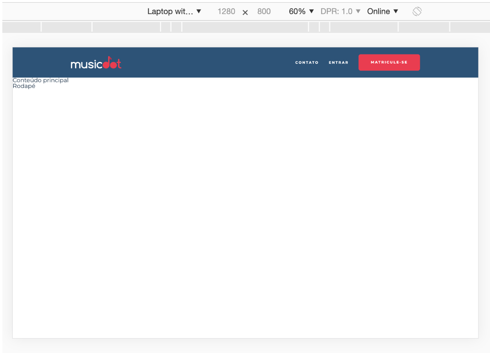

Começaremos agora a página principal da MusicDot.
Edite o arquivo index.html que criamos anteriormente (se não criou antes, é só criar agora) e coloque toda a estrutura básica de um arquivo HTML e também aproveite para criar toda a estrutura do cabeçalho da home. No link de "Contato" do menu do cabeçalho, aponte para a parte de contato na página sobre.html.
Num celular o cabeçalho terá a seguite aparência:
Não se preocupe em criar os nomes das classes e estilizar ainda. Sem estilos o resultado final será próximon a esse:
Nos próximos exercícios contruiremos um cabeçalho responsivo param vários tamanhos de tela:
